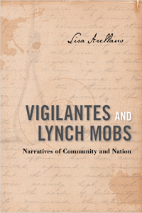

Vigilantes and lynch mobs not only usurped the authority of the law, they shaped the histories of their actions
Vigilantes and lynch mobs not only usurped the authority of the law, they shaped the histories of their actions


 Vigilantes and lynch mobs not only usurped the authority of the law, they shaped the histories of their actions
Vigilantes and lynch mobs not only usurped the authority of the law, they shaped the histories of their actions

|  |
Vigilantes and Lynch MobsNarratives of Community and NationLisa Arellanopaper EAN: 978-1-43990-845-7 (ISBN: 1-4399-0845-1) |
"Vigilantes and Lynch Mobs is more interested in the historiography of the vigilante/lynchings narratives than in the histories, which makes it unique. Using close readings of lynching stories/narratives from several genres�notably archival sources, printed contemporary accounts, and printed histories�Arellano seeks to understand emergent narratives about lynchings, and how Ida. B. Wells disrupted the accepted narrative formula (which justified lynchings). Arellano has identified�through careful research and close readings�an alternative mythology legitimating violence in pursuit of order and justice."
—Jay Mechling, Professor Emeritus of American Studies at the University of California, Davis, and author of On My Honor: Boy Scouts and the Making of American Youth
Looking at the narrative accounts of mob violence produced by vigilantes and their advocates as "official" histories, Lisa Arellano shows how these nonfiction narratives conformed to a common formula whose purpose was to legitimate frontier justice and lynching.
In Vigilantes and Lynch Mobs, Arellano closely examines such narratives as well as the work of Western historian and archivist Hubert Howe Bancroft, who was sympathetic to them, and that of Ida B. Wells, who wrote in fierce opposition to lynching. Tracing the creation, maintenance, and circulation of dominant, alternative, and oppositional vigilante stories from the nineteenth-century frontier through the Jim Crow South, she casts new light on the role of narrative in creating a knowable past.
Demonstrating how these histories ennobled the actions of mobs and rendered their leaders and members as heroes, Arellano presents a persuasive account of lynching's power to create the conditions favorable to its own existence.
Excerpt available at www.temple.edu/tempress
"Arellano has made an important intervention in our understanding of American violence by weaving Southern and Western lynch law into a national narrative. Embedding its analysis in story-telling and critical writing about mob justice, Vigilantes and Lynch Mobs offers a crucial perspective for understanding contemporary violence as well."
—Claire Bond Potter, Professor of History at The New School, and author of War on Crime: Bandits, G-Men and the Politics of Mass Culture
"Vigilantes and Lynch Mobs offers a model of interdisciplinary analysis. Arellano has studied accounts of vigilante violence on western frontiers and in the Jim Crow South, and she turns to theories of narrative and history to help make sense of our country�s tragic legacy of racial violence. Her book draws its moral urgency from her insistence that we understand how violent events are connected to the stories we tell about them."
—Ann Fabian, Professor of American Studies and History Rutgers, The State University of New Jersey, and author of The Skull Collectors: Race, Science, and America's Unburied Dead
"Lisa Arellano�s Vigilantes and Lynch Mobs contributes to the recent trend of writing histories of the various species of American mob violence that consider long periods and wide contexts... Her discussion of how Hubert Howe Bancroft wrote his accounts of the San Francisco vigilance committees is a model of careful textual scholarship and should interest anyone concerned with how the craft of history was developing at that time."
—Journal of American History
"Arellano is mostly interested in how lynching narratives, crafted by contemporary apologists and critics of lynching, form and function.... Based on the close reading of published and archival sources, Arellano constructs two ideal narratives that have shaped the public discourse on lynching during the nineteenth and twentieth centuries.... Historians of lynching will agree that Arellano�s ideal narratives epitomize the American lynching discourse."
—Pacific Historical Review
Acknowledgments
Introduction: History, Memory, and Narrative
1. From Street Brawls to Heroism: The Official Vigilante Histories
2. Heroic Stories: Vigilante Ideals and Lynching Truths
3. John/the Victim/the Heathen: Hubert Howe Bancroft and the Making of Western History
4. Narrative Revisions and the End of the Vigilante Ideal
Conclusion: Living in, and with, the Past
Appendix A: Official Vigilante Histories
Appendix B: The Works of Hubert Howe Bancroft
Appendix C: Vigilance Committee Interviews
Notes
Bibliography
Index
Lisa Arellano is Associate Professor of American Studies and Assistant Professor and Director of Women�s, Gender and Sexuality Studies at Colby College.
American Studies
Law and Criminology
History
© 2015 Temple University. All Rights Reserved. This page: http://www.temple.edu/tempress/titles/2200_reg.html.